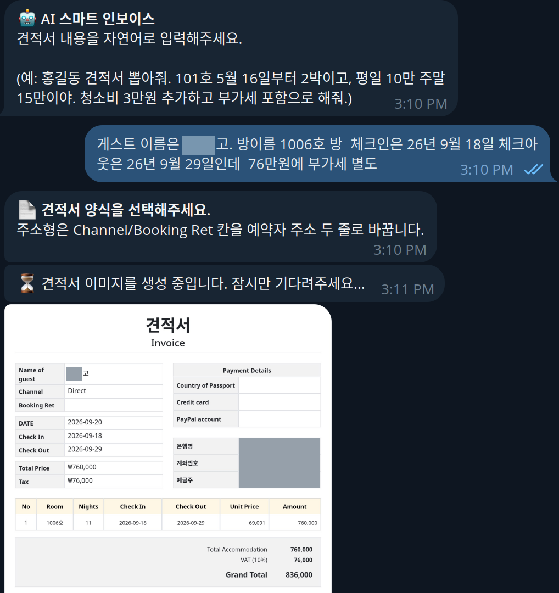
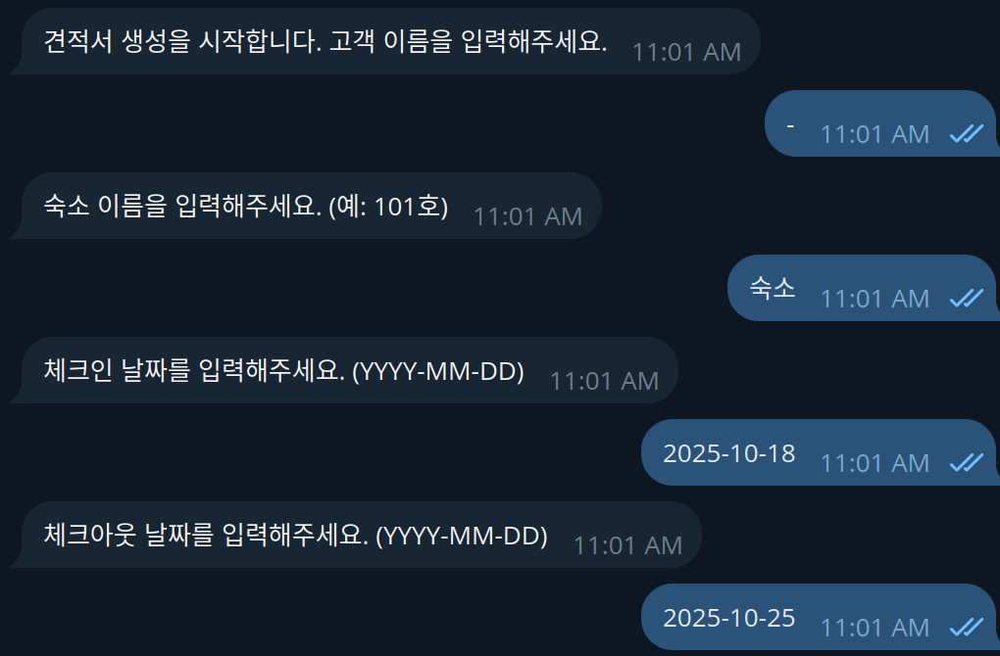
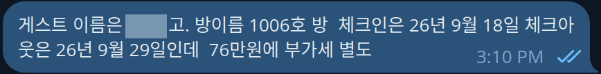
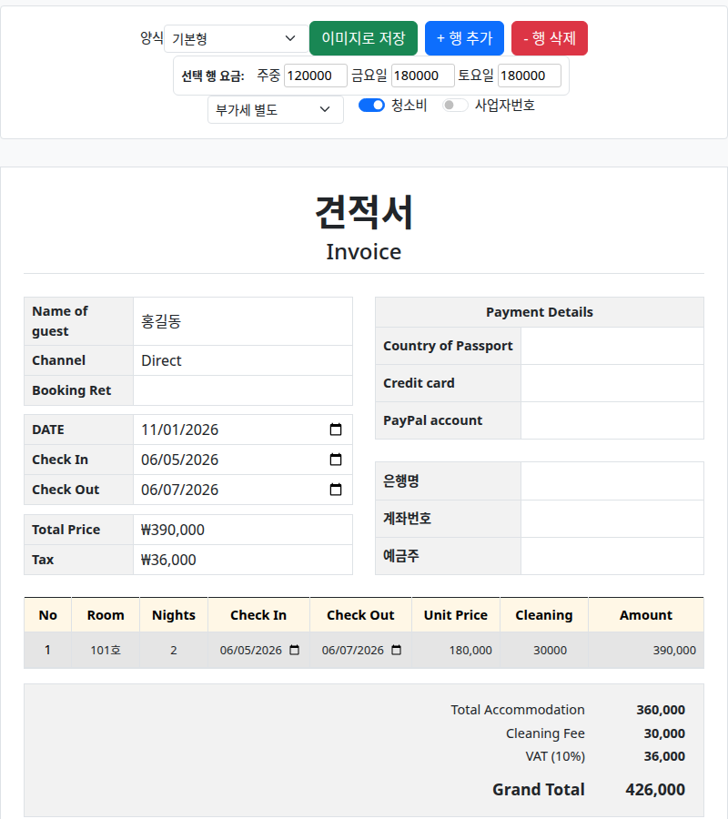

Overview
대신 쓰던 견적서를
대신 쓰던 견적서를
운영자가 한 문장으로 발행한다
PC를 쓰지 않는 가족 숙박업 운영자가 메신저만으로 견적서를 직접 발행하도록 바꿨습니다. 요구 정리와 단계별 전환 결정, 메신저 봇과 업무 프로그램 6종의 개발, 운영과 장애 대응까지 혼자 맡고 있습니다.
- 입력: 손님, 객실, 날짜, 총액, 부가세를 평소 말투 그대로 한 문장으로 입력
- 해석: "11박 76만원"처럼 총액만 줘도 그 금액을 고정하고 1박 단가는 코드가 역산
- 발행: 확인 요약에서 생성을 누르면 양식 선택을 거쳐 견적서 이미지가 바로 전송
Python · python-telegram-bot · Gemini API · Ollama · Pydantic · Selenium · Playwright

실제 사용 화면 · 손님 식별자, 계좌, 사업장 정보 가림. 이름 칸의 "고"는 조사까지 이름으로 추출된 실제 오류 (06 참고)
Problem
견적서를 쓰는 사람이
견적서를 쓰는 사람이
운영자가 아니었다
운영자가 직접 견적서를 만들 방법이 없어서, 문의가 올 때마다 개발자가 대신 작성했습니다.
운영자는 PC를 쓰지 않는다
견적이 필요할 때마다 개발자가 퇴근 후 엑셀로 작성해 전달한다
평일, 금요일, 토요일 요금이 달라 계산 실수 위험이 있다
Design Decision
LLM에는 해석만,
LLM에는 해석만,
계산과 판단은 코드에
운영자가 결과를 직접 검증하기 어렵다는 조건에서, 틀리기 쉬운 지점을 LLM 밖으로 분리했습니다.
- 계산 분리: LLM은 객실, 날짜, 단가 같은 원시 값만 구조화 출력으로 추출. 금·토 요금 구분, 부가세, 합계는 같은 계산 모듈이 담당
- 혼동 줄이기: 손님을 전화번호 뒷자리로 부르는 관행 때문에 객실 번호와 헷갈림. 등록 객실 목록을 프롬프트에 넣고, 목록에 없는 객실이 나오면 경고
- 사람 확인: 생성 전에 계산 결과를 보여 주고 생성, 가격 수정, 취소 중 선택. 해석에 실패하면 3회까지 다시 입력받고 이후 수동 입력으로 안내
날짜별 요금 요청의 처리
# 운영자 입력
22일 6만, 23일 6만, 24일 8만
# LLM 출력
날짜와 가격만 나열
합계와 체크아웃은 비워 둠
# 코드 계산
합계 200,000
체크아웃 25일
# 산술과 마지막 날짜 계산은 LLM이
# 미묘하게 틀리기 쉬워 코드로 분리
Iteration
쓰는 사람에 맞춰
쓰는 사람에 맞춰
입력 방식을 바꿔 왔다
처음부터 자유 문장을 받은 것은 아닙니다. 운영자의 피드백을 받을 때마다 입력 방식을 바꿨습니다.
- ~ 2025.08 엑셀 대리 작성: 퇴근 후 수작업
- 2025.10 질문형: 항목마다 하나씩 답하고 날짜는 정해진 형식으로 입력
- 2026.03 한 줄 입력: 방마다 숫자를 순서대로 입력. 단계는 줄었지만 형식을 외워야 하는 문제는 남음
- 2026.05 LLM 견적서: 자유 문장으로 입력하고, 계산은 코드가 담당
- 2026.09 업무 분리 운영: 업무별 프로그램 6종으로 운영

2025.10 질문형 입력 · 실제 화면

2026.05 LLM 입력 · 실제 화면, 손님 식별자 가림
Operation
메신저 하나에서
메신저 하나에서
숙박 운영 업무 처리
견적서로 시작해 일일 주차 할인권, 월주차, 객실 계정 관리, 관리비 정산까지 같은 방식으로 확장했습니다.
- 분리: 업무 프로그램은 메신저를 모름. 각 업무는 명령줄로 동작하고 결과를 성공·실패 JSON 한 줄로 반환. 설치되지 않은 프로그램의 메뉴는 숨김
- 기록 기준: 이미지 생성과 이력 저장을 분리하고, 메신저 전송 성공을 확인한 뒤에만 발행으로 기록
- 장애 대응: 외부 모델이 실패하면 로컬 모델로 전환하고 같은 스키마로 검증. 호출 전에 사용 가능 여부를 확인해 메뉴 노출을 결정
- 멈춰도 계속: 계산 로직을 견적서 화면에도 넣어, 프로그램이나 서버에 문제가 생겨도 브라우저에서 직접 고쳐 완성
- 알림: 입력 오류 같은 정상적인 실패는 사용자에게 안내하고, 프로그램 비정상 종료는 개발자에게 알림

견적서 결과 화면 · 위쪽은 직접 수정용 도구 (가짜 데이터, 사업장 정보 제외)
Result
견적서를 운영자가
견적서를 운영자가
직접 발행한다
2025.08부터 운영 중입니다. 운영하면서 발행 이력 기반 수정과 재발행, 가격 수정 화면, 메뉴 배치를 계속 조정하고 있습니다.
| 구분 | 내용 |
|---|---|
| 결과 | 견적서를 모두 AI 입력으로 생성. 보관 중인 최근 기록 기준 2026.09 46건, 2026.10 29건 |
| 결과 | 최근 두 달 로그의 외부 모델 장애 17회 모두, 10분 안에 견적서 발행이 이어짐 |
| 실제 오류 | "(번호)고."의 조사까지 손님 이름으로 추출된 사례. 사람이 확인하는 단계를 둔 이유이자 이름 필드 검증으로 보완할 지점 |